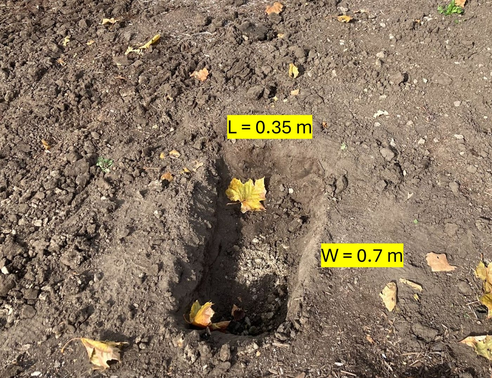
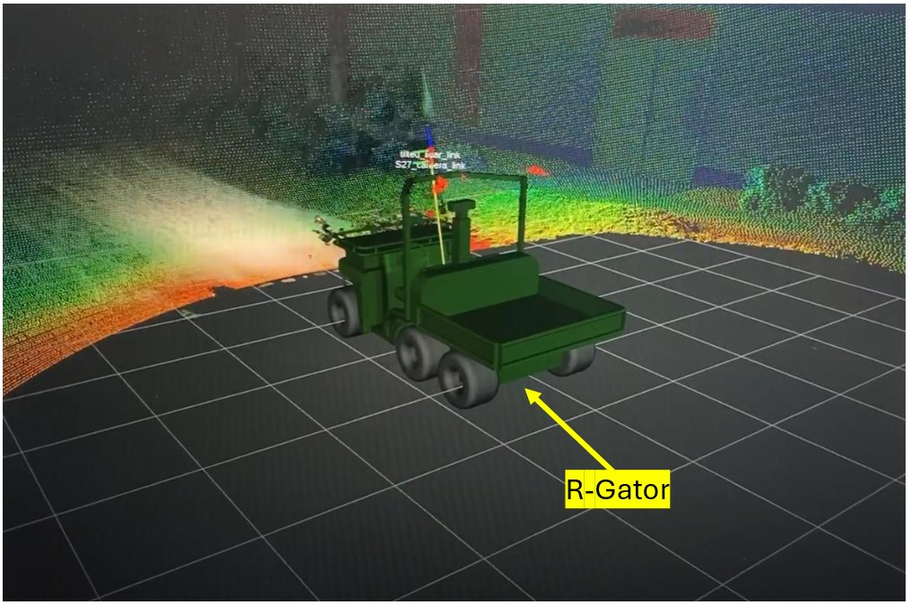
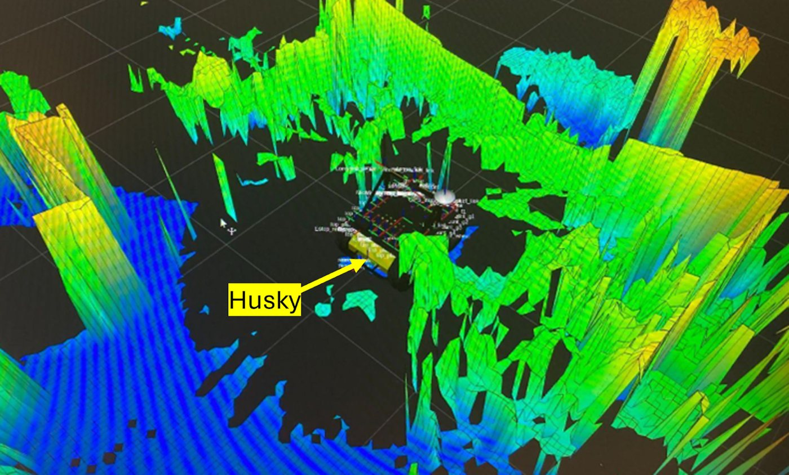
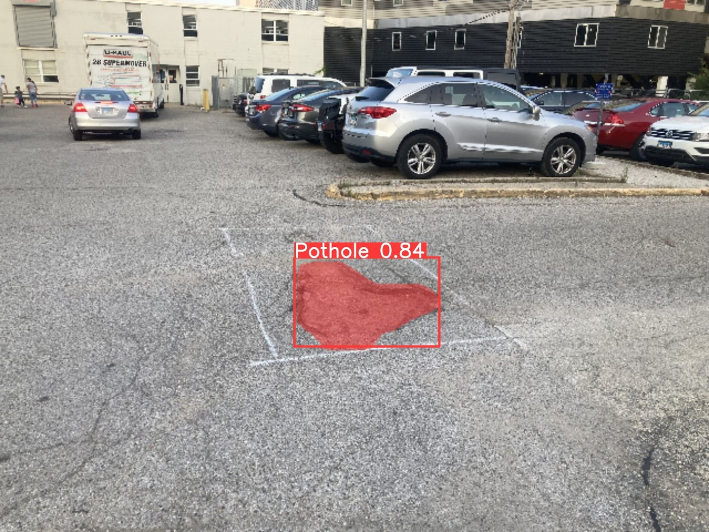
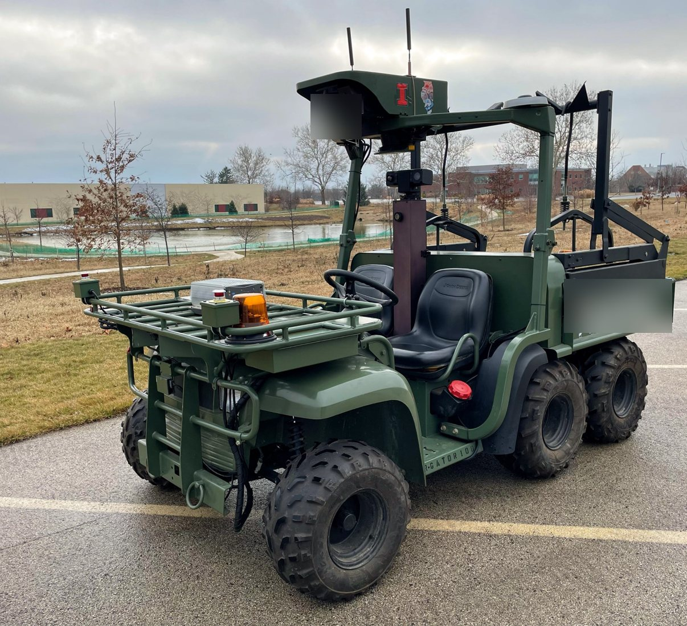

projects
Selected work

Long-range negative-obstacle detection
Seeing trenches and pits at 8.5 m instead of ~3 m with one roof-mounted LiDAR: scan-line geometry, multi-frame ICP fusion and a 5 cm elevation/occlusion cost map. Preprint available.
View project →
Ground segmentation for off-road terrain
Patchwork, Patchwork++, GndNet and SqueezeSegV3 on an outdoor dataset I collected, plus a live in-browser concentric-zone segmenter and Patchwork running on the R-Gator.
View project →
Results in progressSensing stack: calibration, fusion & localization
Tilted sensor mount, LiDAR–stereo calibration through URDF/TF, and EKF odometry (IMU + wheel encoders) on ROS2.
View details →
Results in progressTerrain traversability mapping
2.5D elevation, 3D voxel and GPU multi-layer elevation maps across three robots, bridged ROS1↔ROS2 with Docker.
View details →
Results in progressVision-based pothole detection
Custom-trained YOLOv8 segmentation as a camera-based pilot study for negative obstacles.
View details →
Results in progressAutonomous off-road platform
Turning a 6×4 John Deere R-Gator into an autonomous research vehicle, alongside Husky, Jackal and Warthog.
View details →